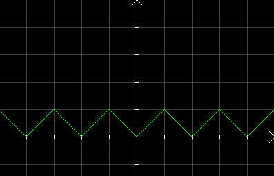

| Choisissez votre langue ! | Choose your language ! |
Cet exercice est consacré à une notion voisine de l'antipériodicité.
On traite ici le cas où il existe un réel t tel que: f(t+x)=f(t-x) conjointement avec la périodicité de période 2t.
On considère la fonction numérique f définie sur tout ℝ par les conditions suivantes:
- f est affine par morceaux
- f(0)=0
- f(1)=1
- f(1+x)=f(1-x) ∀x∈ℝ
- f est périodique de période 2
- Calculer f(x) pour x∈[0,1].
- Calculer f(x) pour x∈[1,2].
- Tracer la représentation graphique de f.
aide
- Trouver a et b sachant que f(x)=ax+b f(0)=0 f(1)=1
- Trouver a et b sachant que f(x)=ax+b f(1)=1 f(2)=0
- Tracer la représentation de f sur [0,1] puis sur (1,2], et reproduire par périodicité.
solution
- f(x)=x
- f(x)=-x+2
-

This exercise is devoted to a notion close to antiperiodicity.
Here we deal with the case where there is a real t such that: f(t+x)=f(t-x) together with periodicity 2t.
We consider the numerical function f defined on all ℝ by the following conditions:
- f is piecewise affine (linear)
- f(0)=0
- f(1)=1
- f(1+x)=f(1-x) ∀x∈ℝ
- f is periodic with period 2
- Calculate f(x) for x∈[0,1].
- Calculate f(x) for x∈[1,2].
- Draw the graphical representation of f.
hint
- Find a and b knowing that f(x)=ax+bf(0)=0 f(1)=1
- Find a and b knowing that f(x)=ax+bf(1)=1 f(2)=0
- Plot the representation of f on [0,1] then on (1,2], and reproduce by periodicity.
solution
- f(x)=x
- f(x)=-x+2
-
|
Création Gilles Dubois
Created by Gilles Dubois
|
Janvier 2022
January 2022
|
Version mobile Jquery
Mobile Jquery version
|
|